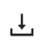

Order list is a centralized space for users to create order, manage order, monitor order status and review deliverables.
Order List is the default page after users opens the mapping order application, which can be found in the function list on the left-hand side of the platform interface.
Users can start a new order by clicking on the Create Order button located on the top-right of the interface.
Click on “Submit” after setting the order name and provide corresponding opportunity ID from Salesforce, the order list page will jump to basic settings page for users to provide more detailed information. The settings page can also be opened by clicking in the action column of each order.
Order settings section allow users to modify the input data (AOI and imagery), requirements for feature extraction, and delivery settings.
Users can view and edit details of the order by clicking on button in the action column. The order list page will jump to input data page once a new order is created for users to provide more information about the order.
By clicking Add AOI button on the top right corner, users can upload the AOI file from local machine or through S3 buckets. Once uploaded, the AOI will be listed under AOI Data section of the page.
Order’s imagery datasets are listed in this section. By clicking on the Add Imagery button in the Imagery Data section, users can add imagery data to the order by providing the following information:
Imagery Type:
Single View: single view imagery for 2D feature extraction
Multi View: multi-view imagery for 3D production
Location:
Local Drive: upload by drag-and-drop or navigate to the location of the file on local machine
Cloud Service: S3 bucket that store the imagery data or through partnered imagery provider
Own S3: customers own S3 path with corresponding access key and secret access key
Ecopia S3: system generated Ecopia S3 bucket paired with access key and secret access key for users to upload imagery datasets to designated S3 buckets
Imagery Provider: download imagery through imagery provider by providing resolution (mandatory) and vintage (not mandatory).
After the information is provided, click on Submit. The newly create imagery dataset will be listed in Imagery Data section. In the meantime, system will process the imagery automatically and run coverage check against the AOI.
2. Imagery Data Action
The following actions are available for uploaded imagery datasets:
Edit Imagery : users can edit imagery datasets by adjusting the location information;
Delete Imagery : users can remove the uploaded imagery dataset by clicking on this button.
After the users adjusted the content in the S3 path to provide more coverage, they can choose to Validate Again to see if the adjusted content fully covers the AOI;
Users can also choose to Ignore Missing Area if the missing area is not crucial to the project.
Click on Save & Continue to save the input data settings and continue to extraction settings.
This space allows users to select desired features (Catetitle) to be extracted from the provided imagery.
Users can select based on product packages or select catetitles individually. Advanced settings and other supporting documents can also be specified and uploaded for production team to better understand the extraction request.
A list of standard product packages are listed on top of the catetitles. Users can select one or multiple packages. Corresponding catetitles will be automatically selected and shown below.
Users can also select individual catetitles and make the current selection as template for future use. After selecting the catetitles that need to be included in the package, click on Add Package Template, the current selection and corresponding settings will be saved as a template and appears in the list of standard packages.
Catetitles are categorized into 4 different Categories:
Raster: include DSM and orthomosaic data generated through production pipeline
2D Landcover: includes building, road, manmade and natural landcover features; height attribute can be selected to construct 3D landcover data
Advanced Transportation: includes different types of transportation related centerlines, polygons, points and other transportation features that can be used for guiding and navigation
Non-Standard: features that are not derived through modeling. These features have been categorized into centerlines, road lines, polygons, and signs.
Users can add catetitles to the extraction orders by clicking on the check boxes next to them.
Users can select the category in general or select second-tier categories to further differentiate the features.
Under Non-standard tab, users can also define new categories by clicking on + Add Category button. In the pop-up window, category name, geometry type, definition, image example, and annotate rules are required to create this new category.
Note
Please refer to product specifications for more detailed explanation of the catetitles.
3. Advanced Settings For Selected Products
In the Advanced settings for selected products section, users can modify the capturing rules for catetitles and dictate catetitle name in the delivery shapefile.
Change Catetitle Name: Catetitle name in the delivery shapefile can be modified by clicking on the button, click on Save to save the changes;
Special Capturing Rules: Special capturing rules can be added through to provide production team with clear instructions, click on Update to save provided information. The following information needs to be provided.
Category: name of the corresponding catetitle;
Geometry type: type of the geometry of the corresponding catetitle;
Definition: project definition of the catetitle if it is different from the standard Ecopia specifications;
File Upload: imagery example of the provided definition or annotate rule, which can assist production team to better understand the extraction requirements;
Annotate Rules: methods of drawing and capturing if different from Ecopia standard specifications.
Overlapping Rules: Users can also dictate whether overlapping is allowed. Users can also adjust the order of overlapping by re-arranging the order of catetitles.
To help production team better understand the extraction requirements, users can also attach supporting document in the Attached Document for Extraction Request section.
Once the AOI information and extraction settings are provided through previous pages, the system can generate quote and estimated production time for this order after users provide Expect Image Arrival information. Users can review the cost quotation and delivery time information and place order.
User can obtain quote information by clicking on the Quote button. At this stage, the system is calculating the quote for the order based on the extraction settings and size of the AOI. The process will normally take a few minutes to complete.
Once the quote is calculated, users can place order by clicking on the Place Order. After the order is placed, the production team will receive notification and the production process will be triggered.
Email notification will be sent to order owner once the vector result is delivered. By clicking on the button, users can view the deliveries and their path on the platform.
Platform Link: users can navigate to the file’s platform location by clicking on the link. Users can also choose to click on the  button to download the file to local machine
Raster WMTS URL: URL to raster dataset in WMTS format
Raster WMTS Expiration: date and time that the raster WMTS will be expired
Vector WMTS URL: URL to vector results in WMTS format
Note
If a new vector result has been delivered, the delivery result window will display the corresponding information for the latest result.
Under this tab, users can upload their offline comment in zipped shapefile format for production team to review and fix accordingly. Along with the zipped shapefile that contains comments, users can also provide writing description and imagery example for production team to better understand the issues.
 in the action column of each order.
in the action column of each order.

: By clicking
: AOI will be removed once click on the